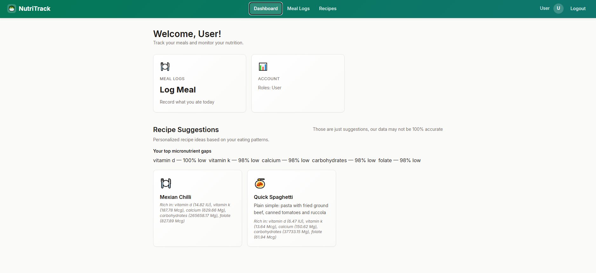
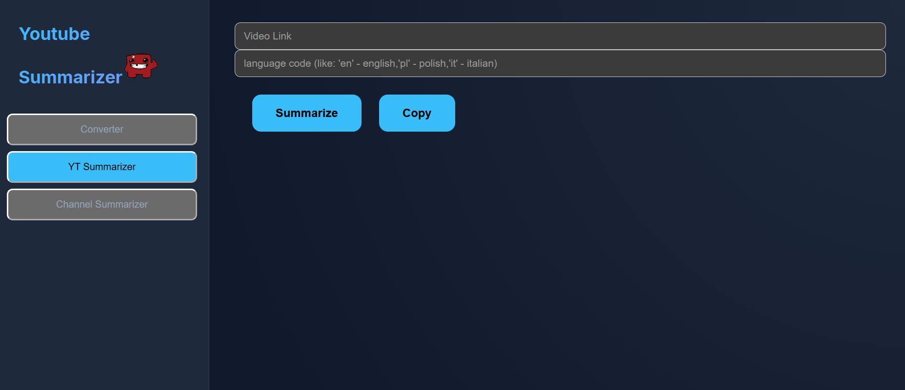

Backend Software Engineer specializing in .NET, distributed systems, and microservice architecture. Experienced in building scalable services, Kafka-based data processing pipelines, and containerized applications deployed on Kubernetes. Alongside my professional work, I've spent years developing smaller games and engine technology in C++.

A food app build to help track your meals and propose suggestions!
Built in C#, with a React frontend using an agent-augmented development process.
Supports user accounts!
You can use the test account:
user@user.com and password Test11

AI-powered web application that generates concise, timestamped summaries for YouTube videos, podcasts, and other long-form content using LLMs.
Summarizer App | Source Code repo